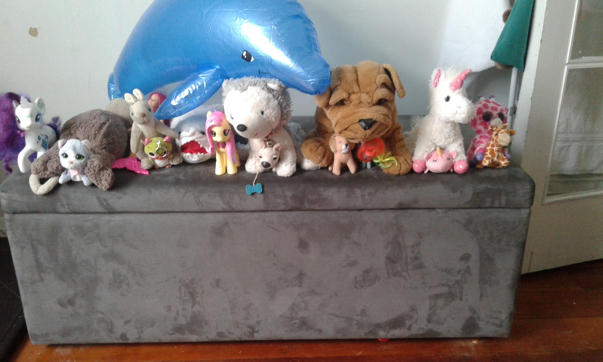
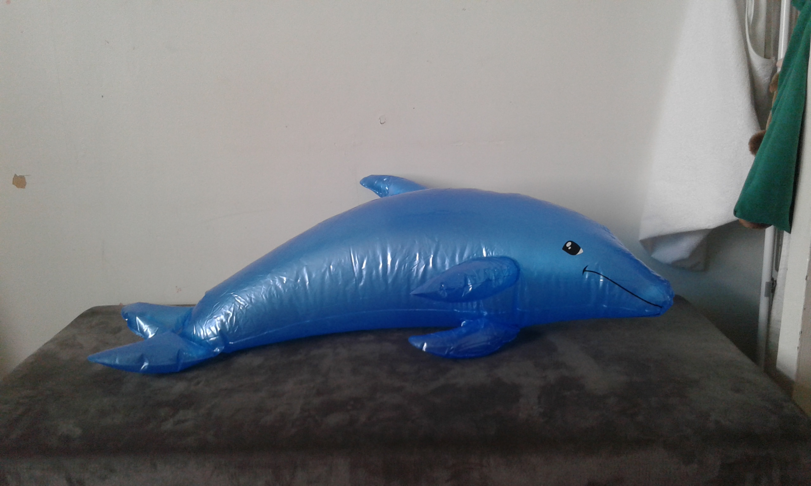
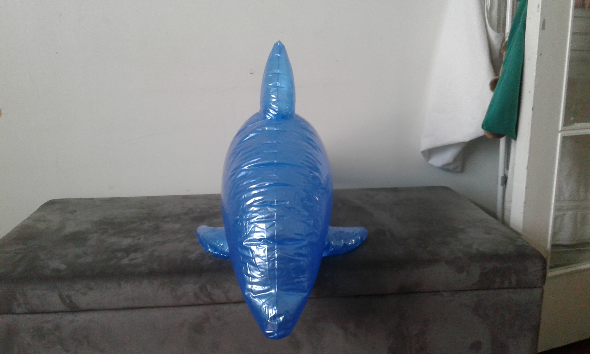
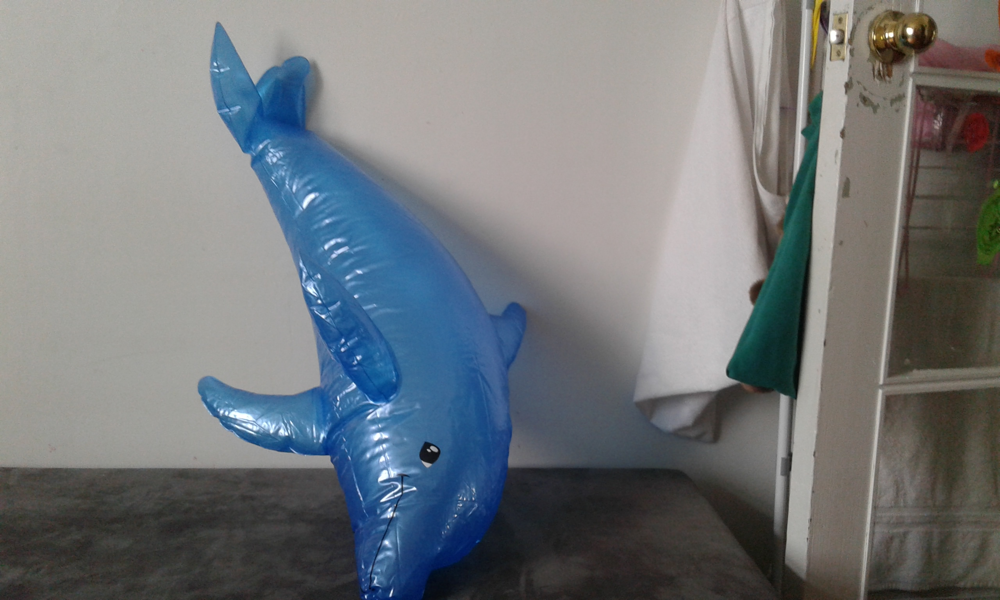

Cool Legendarys
These are the only legendarys that you can catch
Monkey Phee
- Tree Swing
- Banana knife
- Banana launch

Jingle
possible moves:
- scratch
- bite
- quick attack
- magical blast
- jingle bite
Dolphy
Possible moves
- Water Blast
- Tail Splash
- Water Dodge



Pug
possible moves:
- scratch
- bite
- quick attack
- pug bite
Uni
Uni's baby
Mia
Giraffig
Meru
Liu
FlutterShy
They are very hard to find and catch,
but rarity rainbow dash pup pup and meow meow are very easy
to spot and catch